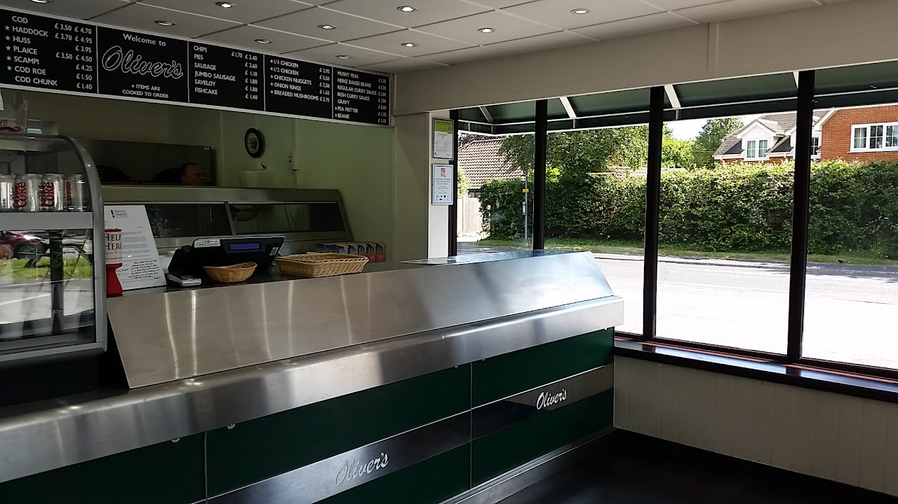
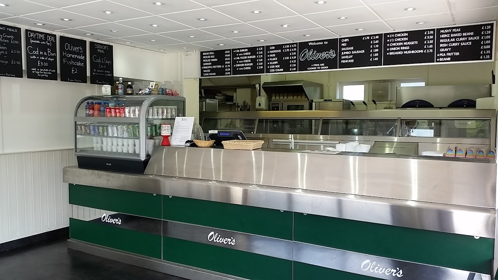

Opening hours
Open every day, except Christmas day, Boxing day and New Year's day
Monday – Sunday 12pm–9pm
Open every day, except Christmas day, Boxing day and New Year's day
Monday – Sunday 12pm–9pm
In addition to all of our regular menu items, check out our daily board for "Catch of the Day"!

